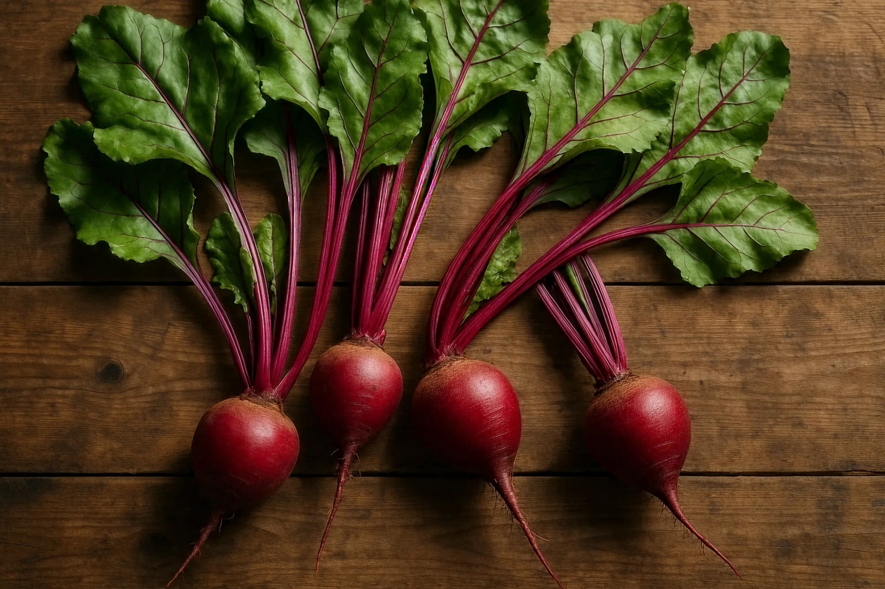

Beet root is a nutritious root vegetable known for its deep red color and earthy flavor. It is commonly used in salads, soups, juices, and healthy meals. Beet root grows well in cool conditions and is suitable for home gardens, pots, and small farming projects.
Needs 5–7 hours of sunlight daily for healthy root development and leaf growth.
Water regularly to keep soil moist but avoid excessive watering and soggy soil.
Best growth at 15°C – 25°C. Cooler weather helps improve root quality.
Use loose, fertile, well-draining soil rich in compost and organic matter.
Can be harvested 2–3 months after planting when roots become medium sized.
Used in salads, soups, juices, pickles, smoothies, and healthy cooking dishes.
Cause: Overwatering and poor drainage.
Solution: Improve drainage and reduce watering frequency.
Cause: Fungal disease from excessive moisture.
Solution: Improve airflow and avoid wetting leaves too often.
Cause: Overcrowded plants or poor soil nutrients.
Solution: Thin seedlings and add compost.
Cause: Common pests feeding on leaves.
Solution: Remove damaged leaves and use natural pest control.
Cause: Lack of sunlight or compact soil.
Solution: Provide more sunlight and loosen soil regularly.